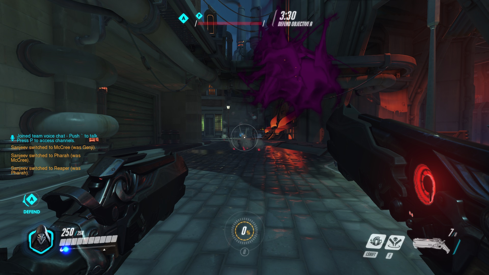
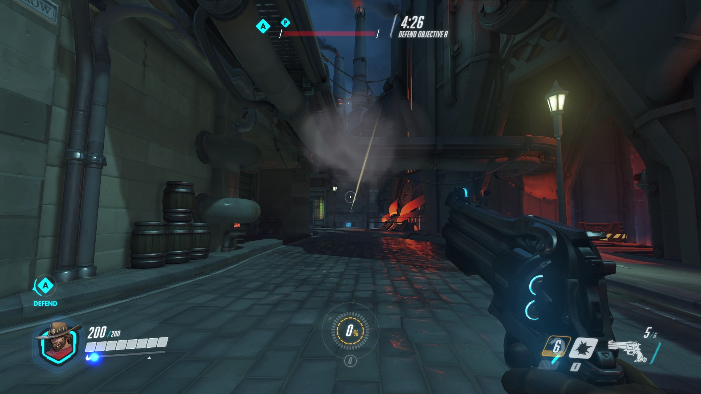
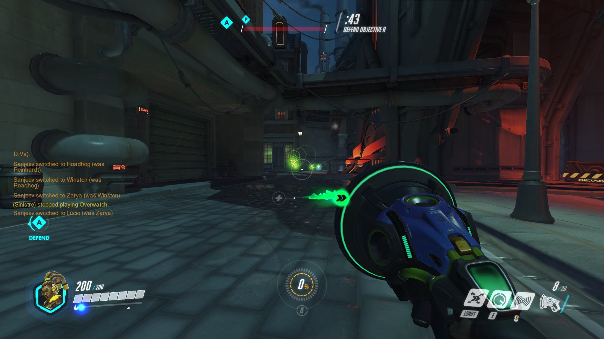
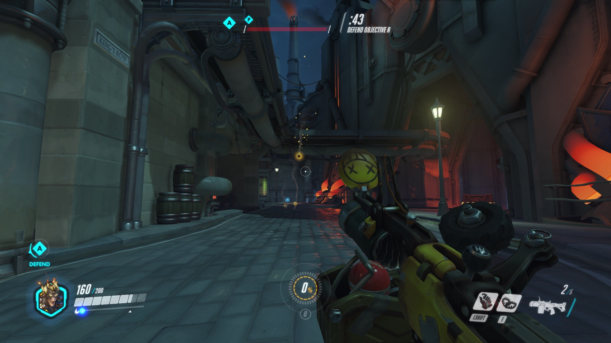
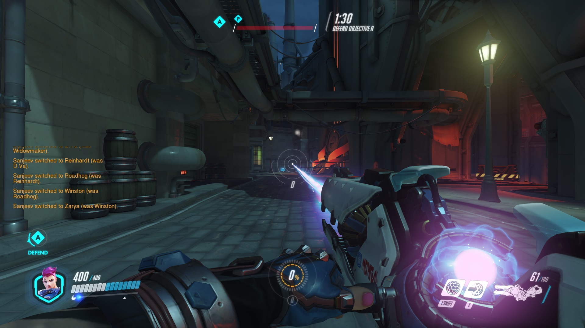
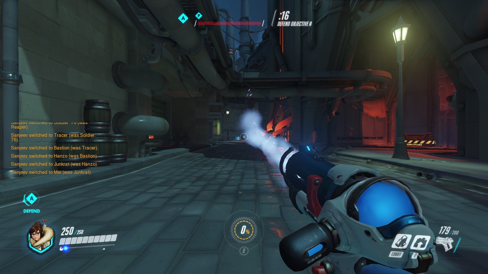
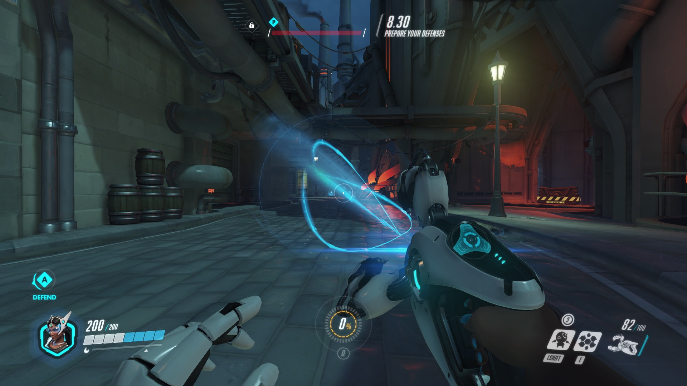
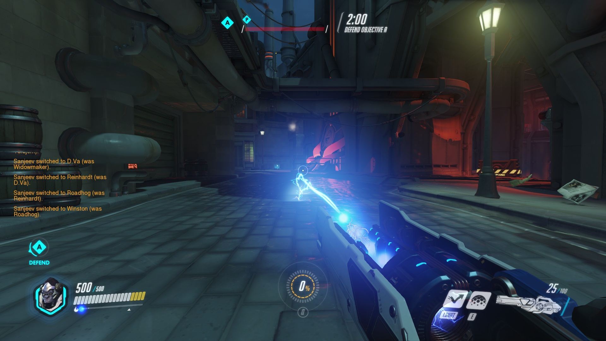

弹道机制
无弹道子弹类:堡垒，矮子的炮台，76的机枪等等
这类其实不是没弹道，而是因为数量多或者射击速度快，所以显得好像没有弹道。
这类的枪基本只能靠建筑或者遮挡物去躲避伤害。或者用护盾等抵挡伤害。
使用没有什么难度，完全靠你射击类游戏的底子
值得一提的是，虽然寡妇的狙击弹道非常明显，但是由于速度极快，所以也归并到这里。
 弹道明显的非枪械类:卢西奥的音波，禅雅塔的大师球，半藏和源氏的射箭和飞镖
这类的子弹有非常明显的飞行轨道，你的攻击需要在较远距离时计算飞行的弹道距离。
这类的攻击伤害都不会太低，而且手感应该不错，也就是说枪稳，需要的就是多练多熟悉本身英雄弹道
 射线类:女汉子的激光枪，美的冷冻枪等等
这类的枪子弹属于类激光类型，有明显的形状，距离中等，攻击力不俗的同时子弹的消耗速度也是非常快的。
 纯近战类:纯近战包括无消耗的大锤，有消耗的辛梅雅和猩猩等等
无消耗的距离会略短一些，但是大锤的挥动动作会让整体人往前移动一点，所以射程会比视觉效果稍微远一点。
至于为什么把猩猩和辛梅雅这俩归到近战类，主要是他们的射程实在不算长，实际上他们的武器也同射线类使用方法
 